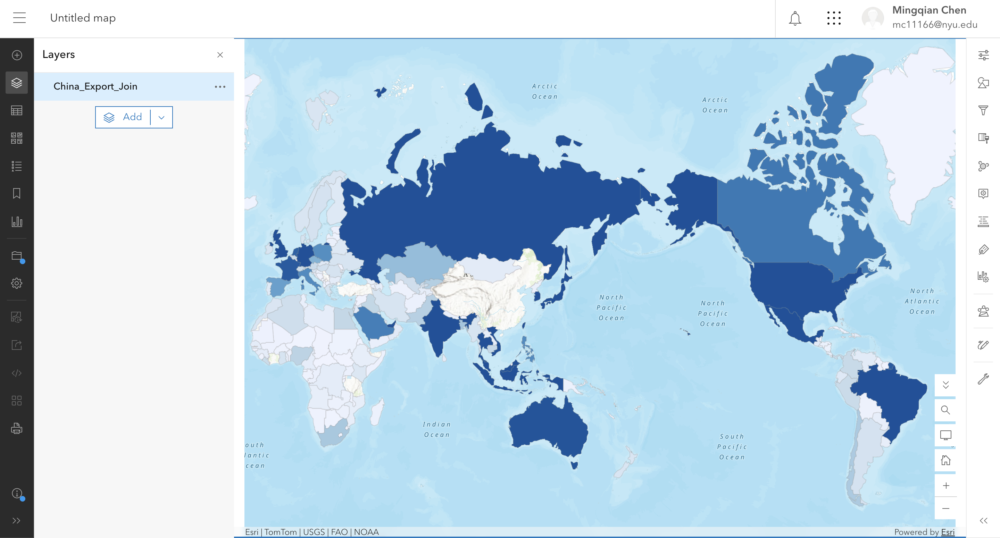
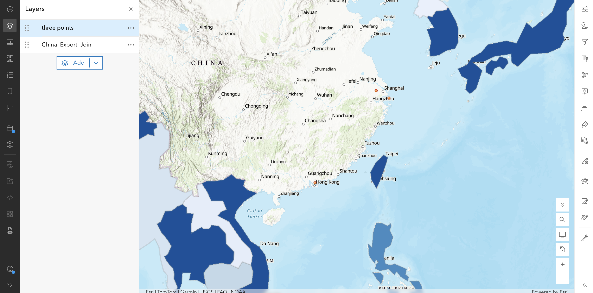
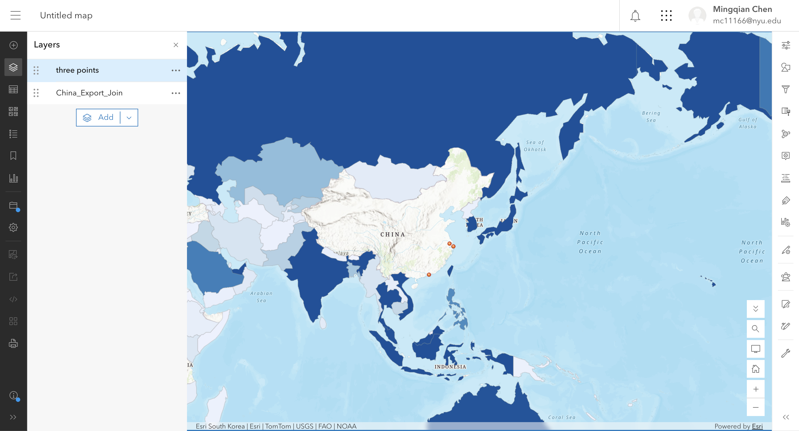

The question
What does my site's country physically offer or deny, and what does it actually trade? The choropleth shows the distribution of value across the scale of a nation, but it erases the specific place where the activity happens.
The data
Trade Table: The Atlas of Economic Complexity (Harvard Growth Lab), 2024, HS92, current US dollars. Source data: UN Comtrade and IMF. Licence: The Atlas permits reuse "provided that users cite the Atlas and underlying data sources appropriately." Data limitation: The 2024 data reflects a reconciled estimate with a 12- to 18-month reporting delay.
Boundary File: Natural Earth, Admin 0 – Countries, 1:110m, v5.1.1. Licence: Public Domain. 177 polygons.
The method
I uploaded the trade CSV (as a non-spatial table) and the Natural Earth zip to ArcGIS Online. I performed a Left Join from the boundary layer to the trade table. I joined on Target field: NAME (boundary file) and Join field: country (trade table). The unit of the number is Gross Export Value in current US dollars.
The evidence



What I found
1. Expectation vs. Data. I guessed China's biggest export was manufactured goods. The data confirms this, but the most striking finding was the visual output: the country that physically produces the goods is completely blank.
2. The join and the blank origin. Because the table is titled "Where did China export to", there is no row for China itself. Therefore, the choropleth paints the consumers in dark blue and leaves the producer in white. This is an attribution failure: the map implies that the destination countries are generating the value, while erasing the actual site of production.
3. The physical link. China's massive export volume is physically sourced from specific coastal ports and manufacturing clusters, not from the entire territory. The white space of China on the map hides the fact that the economic engine is highly concentrated in the east.
4. Limits. The choropleth cannot be used to argue about local wages, environmental impact, or infrastructure in the destination countries. It treats the entire territory of the US as a single consumer.
What this does not show
Proxy sentence: I am using the destination country's polygon to stand for where the economic activity happens, and it might fail because the value is credited to the importing country while the physical production and environmental cost are erased at the origin, meaning the map shows the consumer's demand but hides the producer's reality.
The points are not the truth either. They understate the system by leaving out the supply chains, the road networks, and the people who work there.
AI-usage disclosure
AI-assisted for tidying the HTML and checking structure, using DeepSeek. The choice of table, the join field, the points and the proxy sentence are my own.
Personal reflections have been submitted privately in Brightspace.